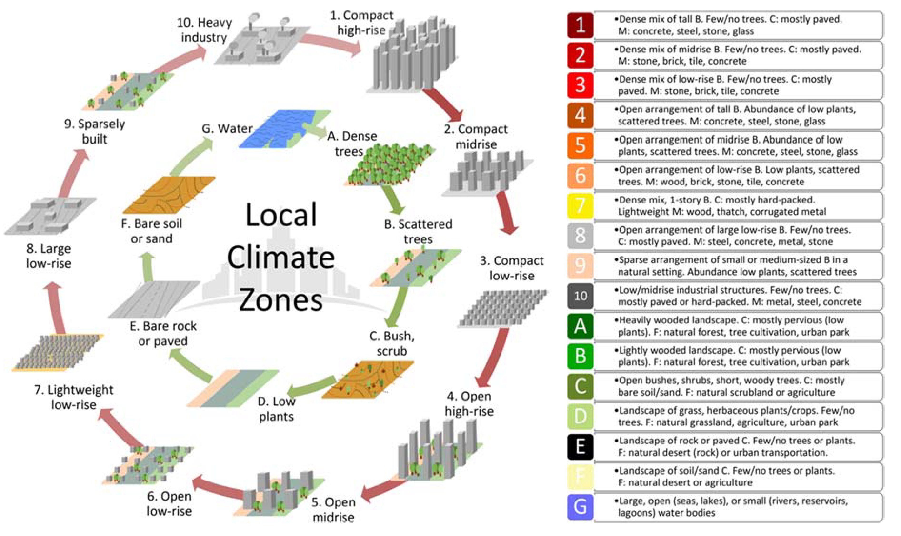

4 Week04
The lecture of the week has introduced several applications of remote sensing and their policy challenges. The following content will focus on Singapore Climate Action contributing to the thermal environment and the urban heat island (UHI) effect. Besides, I will explore how to apply remote sensing data to respond to Singapore’s Climate Targets and their mitigation strategies. It is worth noting that the current methods based on remote sensing data are mainly limited to the monitoring and analysis of the real situation. How to use this data for prevention strategies needs further research.
1.Content Summary: Policy Challenge
1.1 Background: Thermal environment in Singapore
Affected by major global climate changes caused by greenhouse gas emissions, Singapore’s annual average temperature rose from 26.9°C to 28.0°C from 1980 to 2020; Moreover, by 2100, the temperature will rise by 1.4°C to 4.6°C due to the long-term effects of climate change (The National Climate Change Secretariat (NCCS), no date).
However, the UHI effect exacerbates the problem of high temperatures and it is considered as one of the accumulated results of rapid urbanisation in Singapore(Borzino et al., 2020). Heat island effect is a phenomenon that urban areas have a higher temperature than the surrounding area (Oke,1982). The primary reasons for the UHI effect is the greater heat storage due to land use change from natural to impervious surface(Grimmond, 2007). Besides, With the rise in urban population, the increases of building density and human activities also create more energy consumption and greenhouse gas emissions(Zhang et al., 2021). In the terms of Singapore, daytime temperatures are around 0-2°C higher and night-time temperatures are around 2-4°C higher in urban areas compared to forested areas(Figure 1) (Urban Redevelopment Authority(URA),2023). The warmer climate has adverse impacts on biodiversity, public health, food security, energy consumption and other aspects, resulting in a unsustainable future in Singapore.
1.2 Singapore’s Climate Targets
Charting Singapore’s Net Zero Future
Singapore has proposed the Nationally Determined Contribution (NDC) and Long-Term Low-Emissions Development Strategy (LEDS) in response to their climate ambitions.In October 2022, the national climate target was further raised as follows:
- Achieve net zero emissions by 2050.
- Reduce 2030 emissions to 60 MtCO2e after peaking emissions earlier.
1.3 Policies Related to UHI
To achieve net zero emission by 2050 and sustainable development, Singapore has launched some thrusts. The below sections will explore some policies and strategies related to mitigating the UHI effect.
The Singapore Green Plan 2030
Launched in February 2021, The Singapore Green Plan 2030 has proposed 5 pillars for sustainable development, including City in Nature, Energy Reset, Sustainable Living, Green Economy and Resilient Future, indicated in Figure 2.

In the section of Resilient Future, Keeping Singapore cool is emphasised to mitigate the rise in urban heat, and the key strategies proposed by Ministry of Sustainability and the Environment and URA (no date) are as follows:
Understanding the UHI Effect
- Deploying an island-wide network of climate sensors to collect data.
- Establishing models to simulate future climatic scenarios and the microclimates of built-up area.
Conducting Research on the Effectiveness of UHI Mitigation Strategies
- The research projects, such as ‘Cooling Singapore 2.0’, will help policymakers to assess the effectiveness of various strategies to moderate the UHI effect.
Implementing UHI Mitigation Measures
The research findings and insights will provide mitigation measures for the UHI effect.The existing interim measures are:
- Increasing greenery provision in existing built-up areas.
- Optimising building layouts to maximise natural ventilation and shade.
- Adopting ‘cool materials’ on buildings.
- Promoting HDB Green Towns programmes
- ……
1.4 Linking to global agendas and goals
In support of SDGs: 11 sustainable cities and commnuities: Make cities and human settlenents inclusive, safe, resillient and sustainable. 13 Climate action: Take urgent action to combat climate change and its impacts
2.Application
Local climate Zone
The Local climate zone (LCZ) introduced by Stewart and Oke() provide a new classification system of urban structure,which can apply to identofy the nature of urban climate.
Based on their characteristics of urban morphology, built-up,surface cover (pervious and impervious). LCZs are categorised into 17 classes, namely 10 urban classes and 7 natural classes.
 * The indicators for each class of LCZs
- The three process:
- Collect site metadata Sentinel-1 and Landsat
- Define the thermal source area
- Select the local climate zone
- The case
3.Reflection
4.Reference
Borzino, N., Chng, S., Mughal, M. O. and Schubert, R. (2020). ‘Willingness to Pay for Urban Heat Island Mitigation: A Case Study of Singapore’. Climate, 8 (7), p. 82. doi: 10.3390/cli8070082.
Grimmond, S. (2007). ‘Urbanization and global environmental change: local effects of urban warming’. The Geographical Journal, 173 (1), pp. 83–88. doi: 10.1111/j.1475-4959.2007.232_3.x.
Ministry of Sustainability and the Environment and URA (no date) Factsheet on Singapore’s Efforts to Mitigate the Urban Heat Island Effect. Available at: https://www.mse.gov.sg/cos/resources/cos-annex-j.pdf (Assessed: 4 February 2024)
Oke, T. R. (1982). ‘The energetic basis of the urban heat island’. Quarterly Journal of the Royal Meteorological Society, 108 (455), pp. 1–24. doi: 10.1002/qj.49710845502.
The National Climate Change Secretariat (NCCS) (no date) Impact of Climate Change In Singapore. Available at: https://www.nccs.gov.sg/singapores-climate-action/impact-of-climate-change-in-singapore/ (Assessed: 4 February 2024)
Urban Redevelopment Authority(URA) (2023) Planning for a Liveable and HeatResilient City. Available at: https://www.thegpsc.org/sites/gpsc/files/2._singapore_-_planning_for_a_liveable_and_heat-resilient_city.pdf (Assessed: 4 February 2024)
Zhang, Y., Li, D., Liu, L., Liang, Z., Shen, J., Wei, F. and Li, S. (2021). ‘Spatiotemporal Characteristics of the Surface Urban Heat Island and Its Driving Factors Based on Local Climate Zones and Population in Beijing, China’. Atmosphere, 12 (10), p. 1271. doi: 10.3390/atmos12101271.